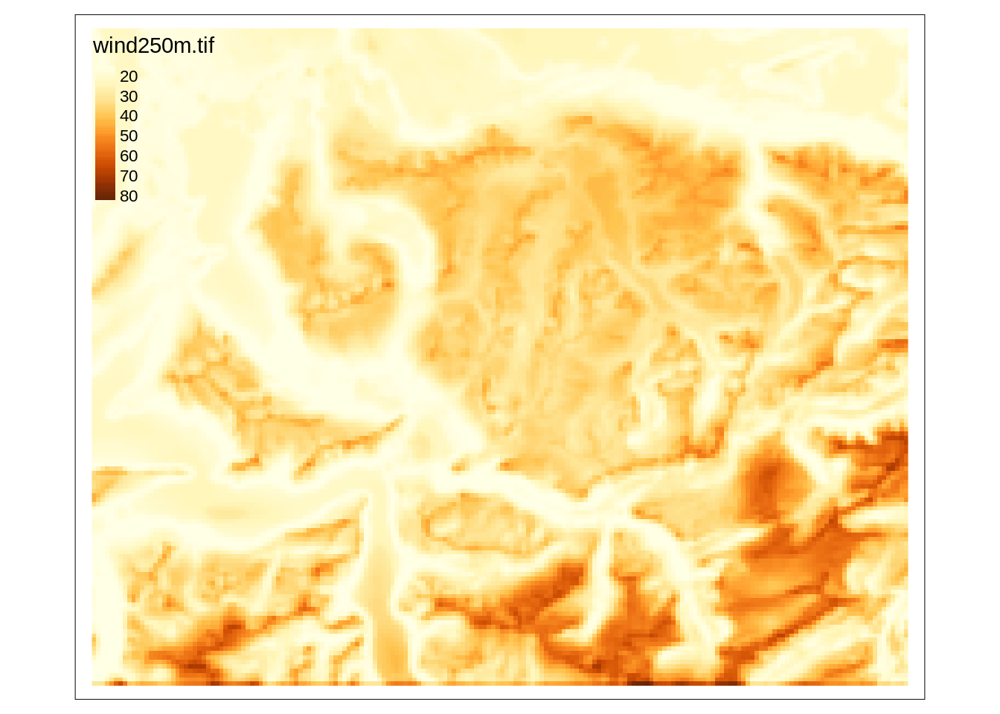
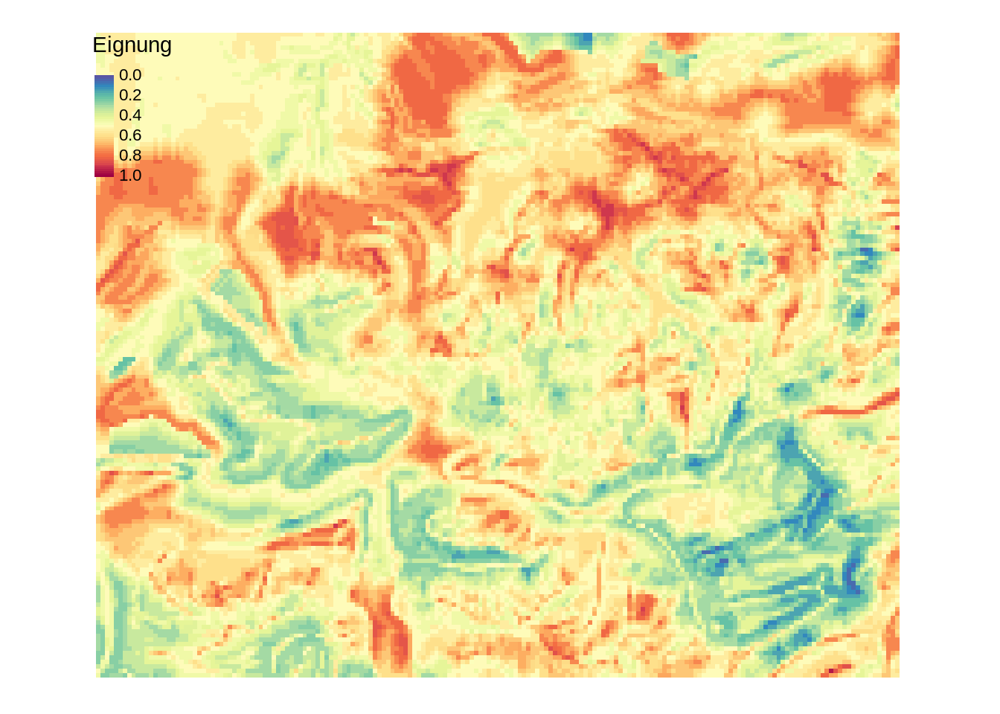

Rauman 5: Übung B
In der letzten Übung (Übung A) haben wir die potentielle Standorte für Windkraftanalgen hinsichtlich vierer Distanzkriterien bewertet. In dieser Übung (Übung B) schliessen wir die Multikriterien-Evaluation ab, in dem wir:
- Folgende Kriterien mitberücksichtigen: Windgeschwindigkeit und Hangneigung
- Die Ausschlusskriterien vom Resultat ausschliessen
Für Punkt 1 müssen wir zusätzliche Daten einlesen, die im Rasterformat daherkommen. Punkt 2 beruht im Wesentlichen auf Daten, die wir bereits verwendet haben.
Aufgabe 1: Rasterdaten einlesen
Zur Bewertung der Standorte hinsichtlich Windgeschwindigkeit steht uns der Datensatz wind250m.tif zur Verfügung (siehe Tabelle 24.1). Lade den Datensatz mit der Funktion rast() in R ein. Explorieren Sie den Datensatz visuell und versuchen Sie ein Verständnis für die Datensätze zu bekommen.
Aufgabe 2: Wind bewerten
Diese Rasterdaten müssen wir nicht weiter verarbeiten, wir können sie direkt bewerten. Führen Sie diese Bewertung aufgrund nachstehender Tabelle durch. Nutzen Sie dafür die Funktion classify() analog Kapitel 24.3. Sie können die Schwellwerte frei wählen, wir werden diejenigen verwenden, die in Tabelle 25.1 festgehalten sind.
Aufgabe 3: Slope berechnen und bewerten
Für die Berechnung und anschilessende Bewertung der Hangneigung brauchen wir ein Höhenmodell. Lade das Höhenmodell dhm250m.tif herunter (siehe Tabelle 24.1) und in R ein. Berechne anschliessend die Hangneigung mit der Funktion terrain() analog Kapitel 19.2 (beachten Sie die Einheit des Output!).
Bewerten Sie die Hangneigung danach gemäss Tabelle Tabelle 25.1.
Windgeschwindigkeit
|
Hangneigung
|
||||
|---|---|---|---|---|---|
| von | bis | zu | von | bis | zu |
| 0 | 20 | 0.0 | 0 | 4 | 1.0 |
| 20 | 30 | 0.2 | 4 | 8 | 0.8 |
| 30 | 40 | 0.4 | 8 | 12 | 0.6 |
| 40 | 50 | 0.6 | 12 | 16 | 0.4 |
| 50 | 60 | 0.8 | 16 | 20 | 0.2 |
| 60 | Inf | 1.0 | 20 | 90 | 0.0 |
Aufgabe 4: Raster Overlay
Analog Kapitel 24.4 können wir an dieser Stelle eine vorläufige Beurteilung der Gebiete durchführen.

Aufgabe 5: Ausschlusskriterien
Als Auschlussgebiete gelten Flächen, wo keine Windkraftanlagen gebaut werden können. Dazu gehören bewohnte Flächen, nationale Schutzgebiete, Waldgebiete und Seen. (Zwar werden Schutzgebiete in unserer Analyse bereits berücksichtigt, aber nicht kategorisch vom Resultat ausgeschlossen.)
Um diese Flächen aus von unserem Resultat auzuschliessen, können wir wieder die Funktion mask() verwenden (siehe Kapitel 24.5). Doch diesmal möchten wir nicht die Flächen ausserhalb der Polygone mit NA ersetzen, sondern die Flächen innerhalb der Polygone. Deshalb verwenden wir mask() mit dem Argument inverse = TRUE.
Versuche mit mask(), den oben erwähnten Vektordatensätze sowie der Option inverse = TRUE die Ausschlussgebiete vom Raster-Overlay zu entfernen und visualisiere das Resultat.